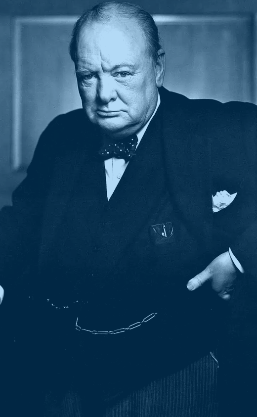
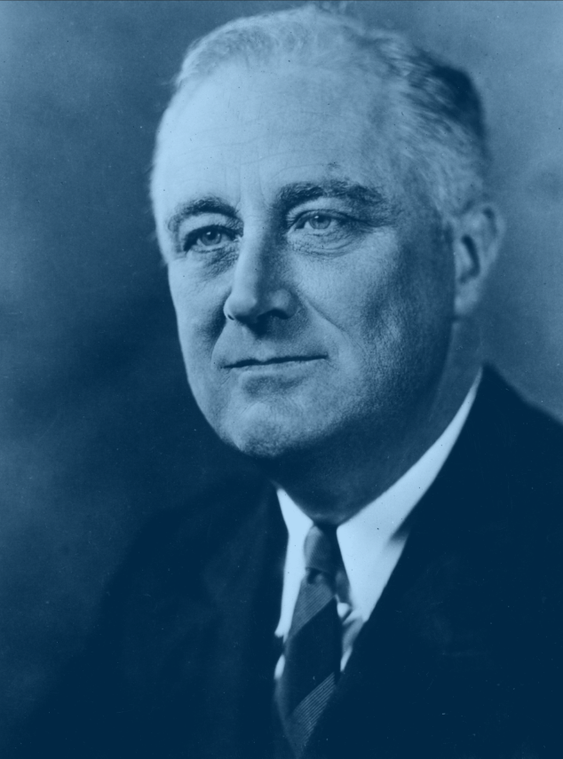
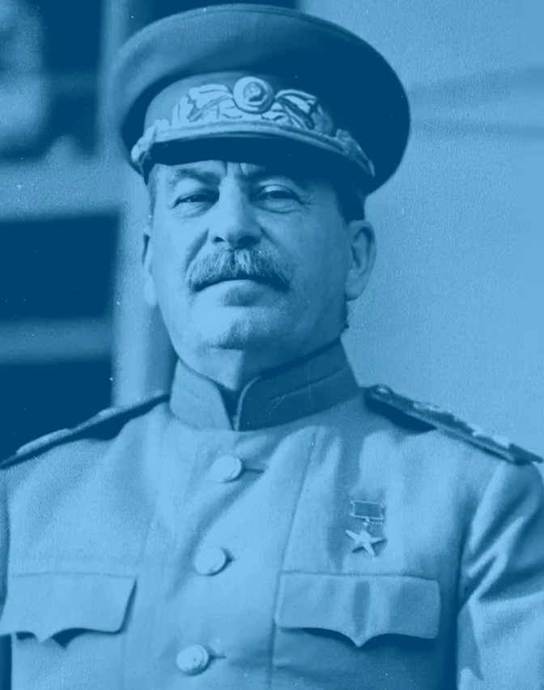
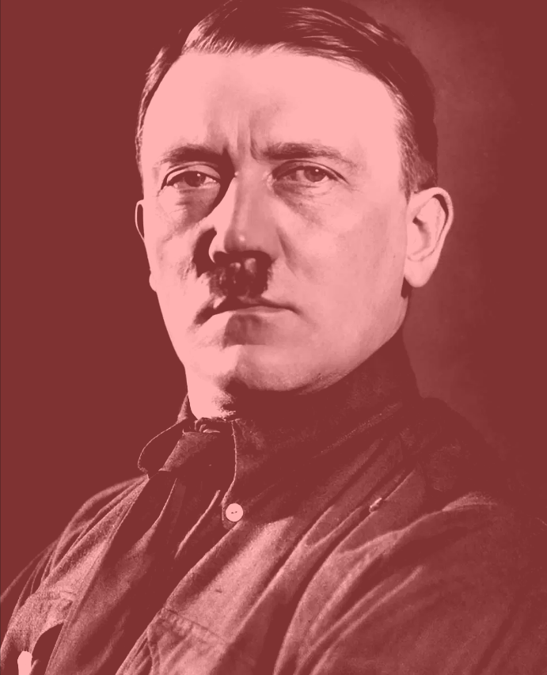
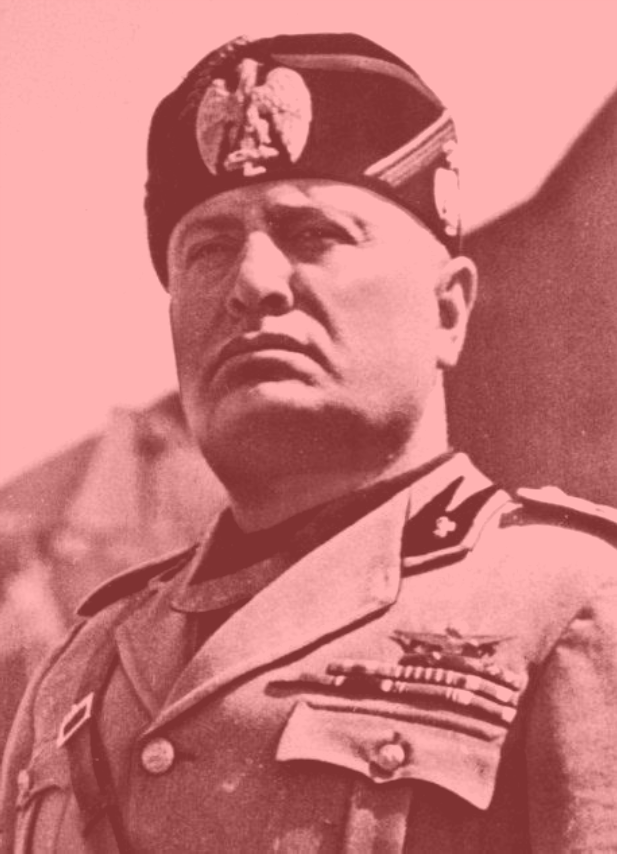
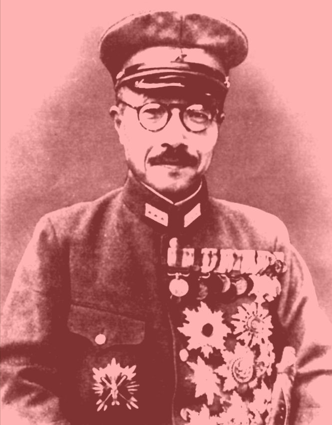

OCdt M. T. Clement
Dr D. Last
POE102-W2S0
January
16, 2025
World War II, between the years 1939 and 1945, was absolutely riddled by the political convictions and the leadership aura of the different people involved. The leaders, from different countries and holding different ideas, really made a mark on how the war played out and how things were shaped after it. Each leader had his own take on the whole global mess, from Franklin Roosevelt's democratic values to Adolf Hitler's totalitarian rule. The political views of these men made World War II more than a struggle for survival but, in many respects, a fight between competing visions of the world.
The President of the United States, Franklin D. Roosevelt was in office to guide the nation through some pretty bad times in the Great Depression and World War II. Coming from the Democratic Party, Roosevelt was a staunch believer in government support for people and democratic principles. His leadership during the War elaborated the importance of working together internationally, especially with the UK and Soviet Union. Roosevelt was all for defeating the Axis powers and establishing a post-war world that focused on peace and collective security, where the United Nations could be created eventually. His commitment to democracy and freedom greatly shaped the American response to the war, while his vision for what comes next did much to set the frame for the Allied strategy.
Churchill, Prime Minister of the UK, joined hands with Roosevelt to lead from the front against Nazi Germany and the Axis powers. As the leader of the Conservative Party, Churchill was a strong advocate of democracy and freedom in the face of the fascist axis swallowing Europe. His leadership during the Battle of Britain and throughout the war really set him in stone as one of the most highly regarded leaders of the 20th century. His close rapport with Roosevelt was extremely significant for the development of the coalition of the Allies, as both were wholeheartedly devoted to the defeat of the Axis powers and to seeing the post-war world defend democratic ideals. His speeches and defiance against all odds inspired his country and the world and set him in history as a symbol of resistance against tyranny.
While Roosevelt and Churchill fought for democracy, Joseph Stalin's vision for the future of the world was rooted in communism. As the leader of the Soviet Union, Stalin had a fundamentally different approach to governance. His regime was distinguished by brutal totalitarian policies, mass purges, and repression against political opposition. However, after the invasion of the Soviet Union by Nazi Germany in 1941, he became integral to the Allied war effort. While remaining deeply suspicious of his Western Allies, Stalin joined Roosevelt and Churchill to defeat Hitler's forces. For Stalin, the expansion of communism and establishing a socialist order were the issues, and that directly put him at variance with the capitalist countries, even after the close of the war.
On the other hand, Adolf Hitler's Nazi regime promoted hardcore nationalism, militarism, and the belief in one race's supremacy over all the rest, one hell of a contrast from what Roosevelt and Churchill believed in. So, Hitler was all about fascism, strict control and the "Aryan" race on a pedestal. And it was precisely this extreme effort to expand and build up this huge empire of Germans that actually initiated World War II. Under his rule, it was all about aggressive land grabbing and those horrific policies targeting Jews that led to the Holocaust. His actions brought immense suffering and also left a deep scar on the conscience of the world. Hitler's concept for the world was all about tyranny and the racial ladder, which is the reason he is considered one of the most hazardous and abhorred characters in history.
Another significant partner within the Axis Powers was Italy, under the leadership of Benito Mussolini. So, Mussolini was the person who initiated Fascism and actually believing in a strong state and a centralized government he wanted to revert Italy to Old Glory by takeover with military strength and stern control. But his alliance with Hitler gave Axis the boost needed, and Italy entered into the warzone. However, unlike Hitler, Mussolini's regime is the one which started to show signs of defeating when the axis started to experience losses. The political philosophy of Mussolini was all about national pride combined with unity, whereas, as a leader, he totally crashed when Italy got defeated. He fell in 1943 when he was overthrown and then executed, which practically marked the end of his brutal rule.
Hideki Tojo was the Prime Minister of Japan who played an important role in the imperialist goals of Japan during World War II. Tojo was a military man with strong feelings of nationalism, believing that Japan should be in charge of Asia. His government was responsible for most of Japan's military actions in East Asia and the Pacific, including the infamous attack on Pearl Harbor, which drew the United States into the war. Tojo had this vision for a future of Japanese imperialism: Japan ruling this whole sphere of influence called the "Greater East Asia Co-Prosperity Sphere". His very brutal military campaigns across China, Southeast Asia, and the Pacific gathered much hatred towards him from around the world. After Japan's defeat, Tojo was arrested and executed for war crimes, which finally put his aggressive and expansionist policies to an end.
These figures were very important in terms of their political views and leadership with respect to what happened during World War II and what would emerge as a result. These different ideologies democracy, fascism, communism, and militarism engendered a world war that was quite singular in history. Leaders like Roosevelt and Churchill were about saving freedom and democracy, while guys like Hitler, Mussolini, and Tojo had expansion and cruel ambitions on their minds. So, while the war brought down the Axis powers, it also heralded great changes in the way the world worked: the emergence of the United States and the Soviet Union as superpowers, for instance, and the establishment of bodies of regional and international government designed to prevent any future global conflict.
https://www.thecollector.com/who-were-the-most-important-leaders-of-wwii/
https://www.internationalinside.com/benito-mussolini-italian-dictator/
https://www.history.com/topics/world-war-ii/world-war-ii-history
https://www.thecollector.com/japan-greater-east-asia-co-prosperity-sphere/
https://alphahistory.com/nazigermany/hitler-and-mussolini/
https://youtu.be/_uk_6vfqwTA
https://youtu.be/fo2Rb9h788s
https://www.historyextra.com/period/second-world-war/ww2-why-did-allies-win-axis-lose/
https://www.worldwar2facts.org/franklin-roosevelt.html
https://www.potterswaxmuseum.com/wwii/joseph-stalin/
OCdt M.T. Clement
L1035
ILOY (Slasher)
POE102-W2S0
Email: mason.clement@rmc-cmr.ca
Phone: (506) 759-4903

Political View: Democracy
Position: Prime Minister of the United Kingdom
Winston Churchill was a tough, determined leader during WWII. His stand against Nazi Germany, especially during the Battle of Britain, and those inspiring speeches he gave really managed to pump up British morale and get the Allied war effort going. As a big supporter of democracy and freedom, Churchill was against the fascism and totalitarianism that the Axis powers were putting down.

Political View: Liberal Democracy
Position: President of the United States
Franklin D. Roosevelt led the nation through the Great Depression and WWII, all while fighting for democracy, international cooperation, and human rights. He helped forge the Grand Alliance with the US, the UK, and the Soviet Union, playing a major part in shaping the post-war global order, including the creation of the United Nations.

Political View: Communism
Position: Premier of the Soviet Union
Joseph Stalin was in charge of the Soviet Union during these awfully rough times. At first, he kept his Allies at arm's length, but his military on the eastside of the globe were key to taking down Germany at this time. Despite teaming up with the Allies at thie time, his idea of communism really shaped how the world was after the war, but his harsh rule back home and his serious distrust of the West definitely colored his time in power.

Political View: Fascism
Position: Führer of Nazi Germany
Adolf Hitler's vision of a militarized, nationalist Germany brought about WWII. His aggressive conquers and quest for racial purity brought an insane amount of destruction and suffering across Europe. Hitler's reign is known for it's aggressive warfare, the Holocaust, and his attempt to spread fascism, which finally led to the demise of Nazi Germany and himself.

Political View: Fascism
Position: Prime Minister of Italy
Benito Mussolini was the founder of Italian Fascism. He basically wanted to create a new Roman Empire.He made an alliance with Germany in hopes that fascism would be the solution to economical and social problems. His ambitions led to Italy's loss in WWII, and Mussolini's dictatorship ended when he was captured and killed by partisan forces.

Political View: Militarism
Position: Prime Minister of Japan
Hideki Tojo was the leader of Japan's imperial policies during World War II. Under his rule, Japan had plans to to expand throughout Asia and the Pacific, most notably by the attack on Pearl Harbor. Tojo believed in the creation of a "Greater East Asia Co-Prosperity Sphere" with Japan as the greatest military power within the planned area. This mindset is what let to Japan's defeat and his execution for committing war crimes.